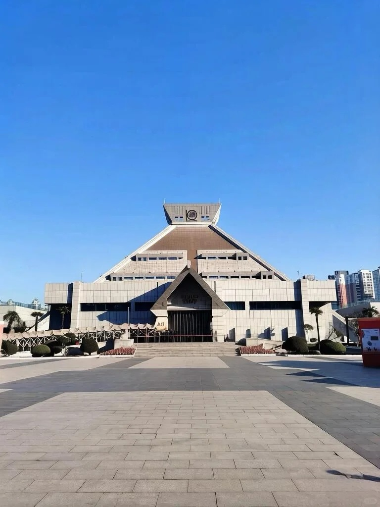

Henan Museum
Henan Museum is one of the most famous museums in China. It has a large collection of historical artifacts, including ancient bronze objects, pottery, and jade. Visitors can learn about the history and culture of Henan through its exhibitions.
For more information, visit the Henan Museum Official Website.
